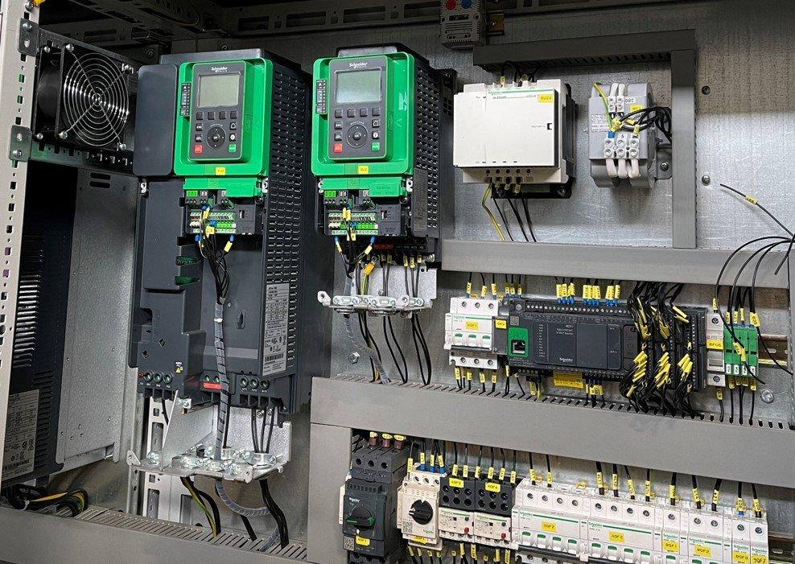
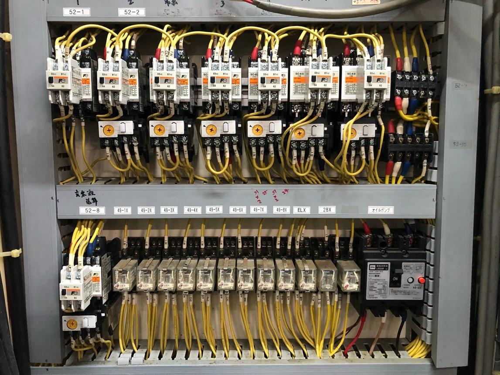
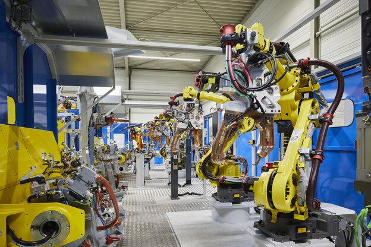
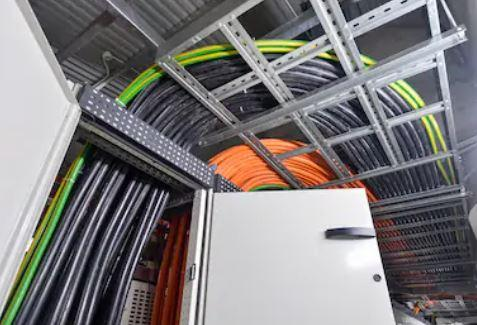

1. Definition
In industrial automation, electrical noise is an unwanted electrical disturbance that interferes with a signal, measurement, or control system. Shielding, grounding, correct cable routing, filtering, and proper circuit design help prevent or reduce its effects.
Noise can cause a PLC input to switch unexpectedly, an analog pressure reading to fluctuate, an encoder to count incorrectly, or a communication network to lose data.
Industrial environments are particularly challenging because motors, VFDs, contactors, welding equipment, solenoids, and high-current cables can produce electrical disturbances.
The objective is not simply to add shielding everywhere. It is to identify the source, the coupling path, and the affected circuit, then apply the correct fix.
2. What does electrical noise look like?
Consider a pressure transmitter producing a stable 4–20 mA signal. The actual pressure is constant, but the PLC reading fluctuates.
For example:
| Time | Expected pressure | PLC reading |
|---|---|---|
| 10:00:00 | 6.0 bar | 6.0 bar |
| 10:00:01 | 6.0 bar | 6.4 bar |
| 10:00:02 | 6.0 bar | 5.7 bar |
| 10:00:03 | 6.0 bar | 6.2 bar |
If the physical pressure is stable, the fluctuations may result from electrical interference, poor connections, grounding problems, an unstable transmitter, or an incorrectly configured input channel.
Noise is one possible cause, not a diagnosis by itself.
3. The main sources of industrial electrical noise

3.1 Variable frequency drives (VFDs)
VFDs switch power electronics rapidly to control motor speed. Their switching edges and motor cables can generate high-frequency electromagnetic interference.
Typical symptoms: Analog values fluctuate when a motor starts or changes speed; communication errors appear during drive operation.

3.2 Contactors, relays, and solenoids
Energizing and de-energizing an inductive coil can generate voltage transients. These disturbances may couple into nearby control wiring or supply circuits.
Typical symptoms: PLC inputs change state when a contactor switches; resets or brief disturbances occur when a solenoid de-energizes.

3.3 Welding equipment and high-current systems
Welding currents and switching equipment can produce strong electromagnetic disturbances.
Typical symptoms: Sensor instability, communication interruptions, or measurement disturbances correlated with welding cycles.

3.4 Incorrect cable routing
Long parallel runs of power and signal cables can increase capacitive or inductive coupling.
Typical symptoms: A sensor works correctly on a short test cable but becomes unreliable when connected through the installed cable route.
Other possible sources include switching power supplies, poor electrical connections, electrostatic discharge, radio-frequency transmitters, grounding faults, and disturbances conducted through shared power supplies.
4. How electrical noise enters a signal
There are four useful mechanisms to understand.
4.1 Electromagnetic induction
A changing magnetic field can induce a voltage in a nearby conductor.
For example, a high-current motor cable runs parallel to a low-level analog sensor cable. Changes in motor current create a changing magnetic field that may induce an unwanted voltage in the sensor circuit.
4.2 Capacitive coupling
A changing voltage on one conductor can couple electrically to a nearby conductor through parasitic capacitance.
This is more likely to be a concern when conductors run close together for long distances, especially when the voltage changes rapidly.
4.3 Conducted noise
Noise can travel through shared power supplies, common conductors, grounding connections, or other electrical paths.
For example, a switching load causes a disturbance on a poorly designed 24 V DC supply. Several sensors connected to that supply may experience the same disturbance.
4.4 Radiated electromagnetic interference
An electrical source emits electromagnetic energy that couples into nearby cables or equipment.
The source may be a drive, welding equipment, a switching circuit, or another high-frequency device.
5. The three-part model: source, path, victim
A practical troubleshooting model is:
NOISE SOURCE
VFD, contactor, welder, switching circuit
|
v
COUPLING PATH
Magnetic, capacitive, radiated, or conducted
|
v
AFFECTED CIRCUIT
Sensor cable, analog input, encoder, network
|
v
OBSERVED SYMPTOM
Unstable reading, false input, lost communication
The best fix may involve any one of these parts.
- Reduce the noise generated at the source.
- Interrupt or reduce the coupling path.
- Improve the immunity of the affected circuit.
This is why blindly replacing a sensor often fails to solve an interference problem.
6. What is cable shielding?
A cable shield is a conductive layer around one or more conductors. Depending on its construction and frequency range, it helps reduce electromagnetic coupling into or out of the cable.
Common constructions include:
- Braided copper shield.
- Foil shield.
- Foil and braid combination.
- Shielded twisted-pair cable.
Shielding is commonly used for analog instrumentation, encoder circuits, communication networks, and other sensitive signals where the cable specification requires it.
However, a shield is not a substitute for correct cable routing, grounding, or circuit design.
7. Shielding vs grounding vs insulation
These terms describe different functions.
| Term | Main purpose |
|---|---|
| Shielding | Reduce electromagnetic coupling |
| Grounding/earthing | Provide an intentional electrical reference or fault-current path, according to the design |
| Insulation | Prevent unintended electrical contact and leakage |
| Twisted pair | Reduce the effects of external interference and differences in induced voltage |
| Filtering | Attenuate unwanted signal components within a designed frequency range |
| Isolation | Reduce unwanted electrical coupling between circuits |
A shield and a protective earth conductor are not interchangeable. Protective earthing is a safety function, while cable shielding is primarily an electromagnetic compatibility measure, though shield bonding can also affect fault and transient currents.
8. How to ground a cable shield
Shield termination depends on the cable, signal type, installation environment, equipment design, and applicable EMC requirements.
8.1 Single-ended shield bonding
In some low-frequency analog installations, the shield is bonded at one end to reduce unwanted low-frequency circulating currents caused by differences in ground potential.
This arrangement may be appropriate for specific circuits, but it is not a universal rule.
8.2 Both-ended shield bonding
For many industrial EMC applications, particularly VFD motor cables and high-frequency interference control, the shield is bonded at both ends using a suitable low-impedance connection. This helps provide a path for high-frequency interference currents.
The termination method matters. A long, thin drain wire can have substantially greater high-frequency impedance than a broad, short shield connection.
8.3 Practical distinction
| Application | General consideration |
|---|---|
| Low-level analog instrumentation | Follow instrument and PLC manufacturer guidance; evaluate ground-potential differences and signal isolation |
| VFD motor cable | Use the specified shielded cable and EMC gland or termination arrangement; often requires bonding at both ends |
| High-speed encoder | Follow encoder and drive specifications, including connector and shield termination |
| Industrial Ethernet | Use the specified shielded or unshielded cable type and connector bonding arrangement |
| Safety-related circuits | Follow the approved design and applicable safety and electrical standards |
Do not automatically ground every shield at one end or both ends without considering the circuit. Follow the equipment manufacturer's instructions and the plant's approved grounding and EMC design.
9. Cable routing: one of the most effective fixes
Correct routing can reduce interference without changing the PLC program or replacing components.
Recommended practices include:
- Keep sensitive analog and communication cables separated from motor power cables.
- Avoid long parallel runs between signal cables and VFD output cables.
- Cross power and signal cables at approximately 90 degrees when crossing is necessary.
- Use separate cable trays or compartments where specified.
- Keep cable lengths and loop areas appropriate to the circuit.
- Use the cable type specified for the device and environment.
- Use proper connectors, glands, and shield terminations.
- Avoid loose, damaged, or poorly terminated shield connections.
Required separation distances depend on cable types, power levels, shielding, tray arrangement, and applicable standards. Use the plant design rules rather than assuming a universal distance.
10. Twisted pair and differential signals
Twisted-pair cable consists of two conductors twisted together along the cable.
The twists help each conductor experience similar electromagnetic interference, reducing the differential disturbance seen by the receiver.
Differential interfaces compare the voltage between two signal conductors instead of relying solely on one signal relative to ground.
Examples include:
- RS-485.
- Many encoder interfaces.
- Certain industrial communication and instrumentation circuits.
Twisted pair does not eliminate every type of noise. Correct termination, cable impedance, routing, grounding, and receiver specifications remain important.
11. Noise in 4–20 mA and 0–10 V signals
These signal types respond differently to common installation problems.
| Characteristic | 4–20 mA current loop | 0–10 V signal |
|---|---|---|
| Cable resistance | Generally less influential while the loop remains within compliance limits | Can cause voltage drop and measurement error |
| Ground-potential differences | Depends on loop isolation and wiring arrangement | Can directly affect the measured voltage reference |
| Electromagnetic interference | Can still cause errors | Can still cause errors |
| Broken signal conductor | May cause under-range or loop-fault indication | May appear as zero or another misleading voltage |
| Key checks | Loop power, polarity, resistance, current, channel configuration | Signal voltage, common reference, cable drop, grounding, channel configuration |
A 4–20 mA loop is often more robust for long field wiring, but it is not immune to interference or wiring faults.
12. Filtering: when and how it helps
Filtering reduces unwanted variations in a signal. It can be implemented in transmitter electronics, analog input modules, PLC software, or control-system processing.
Common approaches include:
- Analog input module filtering.
- Low-pass filters.
- Moving-average filters.
- Software smoothing.
- Input debounce for suitable digital signals.
- Hysteresis for switching decisions.
Example: pressure reading fluctuation
Suppose a pressure reading fluctuates slightly around 6.0 bar because of measurement noise.
A suitable low-pass filter may reduce the displayed fluctuation. However, excessive filtering introduces delay.
That delay can be dangerous if the signal is used for fast control or protection. A filter must not mask a genuine process change or compromise a protective function.
Filtering should be applied only after checking for wiring faults, grounding problems, poor connections, and other underlying causes.
13. Noise troubleshooting in an industrial plant
Suppose an analog pressure value fluctuates whenever a nearby conveyor VFD accelerates.
Use a structured approach:
- Confirm whether the physical pressure is actually changing.
- Compare the timing of the disturbance with VFD operation.
- Inspect signal-cable routing relative to motor and power cables.
- Check the transmitter supply, loop wiring, shield termination, and grounding.
- Verify PLC analog input configuration and diagnostics.
- Measure the electrical signal using appropriate instruments and procedures.
- Compare readings at suitable points to narrow the coupling path.
- Apply a controlled corrective action, such as correcting cable routing or shield termination.
- Repeat the test under the same operating conditions.
- Document the cause, correction, and verification results.
Do not disconnect protective earth conductors or randomly alter shield connections while equipment is energized. Grounding changes must follow the approved electrical design and safe work procedures.
14. Common symptoms and possible causes
| Symptom | Possible cause | First checks |
|---|---|---|
| Analog value fluctuates when a VFD runs | EMI, routing, grounding, or actual process variation | Compare process measurement, signal wiring, drive timing |
| PLC input flickers when a contactor switches | Transient coupling or supply disturbance | Coil suppression, wiring separation, supply quality |
| Encoder position jumps | Noise, shielding, termination, wiring, or encoder fault | Cable and connector condition, signal interface, grounding |
| Communication drops during welding | EMI, bonding, routing, network or device issue | Cable specification, shield bonding, topology, error diagnostics |
| Several sensors fail together | Shared power supply, common wiring, or network issue | 24 V DC supply, common terminals, distribution wiring |
| Signal becomes stable when temporary cable is used | Installed cable route, termination, or cable damage | Routing, connectors, shield continuity |
| Reading is stable but consistently wrong | Scaling, calibration, or configuration | Raw value, input range, transmitter settings |
These symptoms guide investigation; they do not establish a cause without measurement and verification.
15. Interview questions and answers
Q1. What is electrical noise in automation?
An unwanted electrical disturbance that affects a signal, measurement, or control circuit.
Q2. What are common sources of industrial noise?
VFDs, motors, contactors, solenoids, welding equipment, switching power supplies, and poorly arranged wiring.
Q3. What is the difference between shielding and grounding?
Shielding reduces electromagnetic coupling. Grounding establishes an intentional electrical reference or fault-current path according to the design.
Q4. Why are analog signals often affected by noise?
They encode a varying measurement or command, so unwanted electrical disturbances can alter the value the receiving equipment measures.
Q5. Why is cable separation important?
It reduces capacitive and inductive coupling between high-disturbance power circuits and sensitive signal circuits.
Q6. Should a cable shield always be grounded at one end?
No. The correct arrangement depends on the signal, frequency, equipment, grounding design, and manufacturer's requirements. Both-ended bonding is common in many high-frequency EMC applications.
Q7. Why not simply apply a software filter?
A filter can reduce unwanted variation, but it can also delay genuine changes and conceal an underlying wiring or interference problem.
16. Final mental model
When a signal becomes noisy, investigate three areas:
- Source: What equipment is generating the disturbance?
- Path: How is the disturbance reaching the circuit?
- Victim: Which cable, sensor, input module, or communication link is affected?
Then select the appropriate corrective action: improve routing, use the correct cable, fix grounding or shield termination, correct supply and wiring problems, improve isolation, or apply justified filtering.
The objective is not merely to make the displayed value look stable. It is to ensure that the measured signal reliably represents the real machine or process condition.
Next section: 31_Reading_Drawings | Reading drawings.
The first topic will be 01_Electrical_Symbols | Electrical symbols: IEC symbols and reference tags, covering how to identify electrical components and interpret their standardized symbols and designations in industrial drawings.